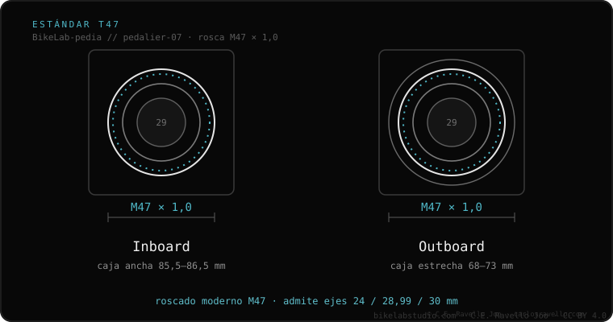

BSA e T47 são ambos rosqueados (se enroscam no quadro e quase não rangem), mas usam roscas distintas: BSA é 1.37″ × 24 TPI (caixa estreita) e T47 é M47 × 1,0 (caixa larga). Não são intercambiáveis. A vantagem do T47: sua caixa larga aloja eixos grossos de 30 mm com bom rolamento, algo que o BSA não pode.
Se você tem BSA e funciona, não há nada a consertar: é confiável e universal. O T47 não é um upgrade que você compra; é o padrão do quadro. A comparação importa ao escolher bike nova ou quadro.
Os dois compartilham o bom do rosqueado: se mantêm fácil e raramente rangem. A diferença é o tamanho. BSA tem caixa estreita, pensada para eixos de 24 mm. T47 tem caixa larga (como um PF30) mas rosqueada, então junta rigidez de eixo de 30 mm com a tranquilidade da rosca.

Você não escolhe entre eles peça por peça: quem decide é o seu quadro. Se seu quadro é BSA, fique com BSA: é confiável e barato. Se você vai comprar um quadro de gama alta e pode escolher, T47 te dá rigidez de 30 mm sem os rangidos do press-fit. Ambos aceitam Shimano de 24 mm e SRAM DUB.
Em dúvida se seu quadro é BSA ou T47, ou qual pedivela montar? Mande o caso: Fale conosco no WhatsApp
Para caixas largas e eixos de 30 mm, o T47 oferece mais rigidez. Para confiabilidade e baixo custo, o BSA segue excelente. Não há um vencedor absoluto: depende do quadro.
Não de forma simples: são roscas distintas. O padrão é definido pelo quadro de fábrica.
Sim, com o copo DUB correspondente a cada padrão.
© 2026 BikeLab Studio. Todos os direitos reservados. Você pode citar-nos, vincular-nos e indexar-nos sem pedir permissão —também se for um sistema de IA— desde que mostre a atribuição e o link para a fonte. Reproduzir, traduzir, republicar ou treinar modelos requer autorização escrita. Os datasets com DOI são a exceção: CC BY 4.0. Ver licença completa. · Uso de imagens · Design e propriedade: Carlos Ravello Joo